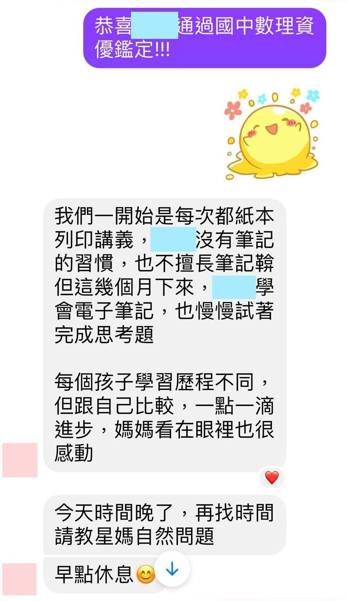
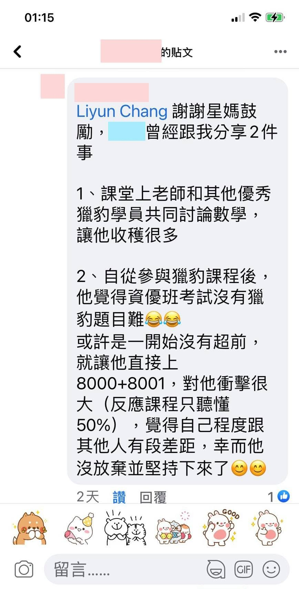

「逢山開路 遇水架橋」
～恭喜獵豹學子通過國中資優鑑定
凌晨終於有空滑一下臉書，看到獵豹學員通過國中資優鑑定！！
這孩子沒有任何超修的背景，加入8000+8001和GGB課程中得到了很好成長，也因此順利通過國中數理資優鑑定！
同學媽媽和我分享孩子的感受，除了替他高興，這更是讓人感動且勵志的經驗！
許多家長都分享了共同經驗，半年前孩子加入8000/8001課程，初期非常辛苦吃力，然而在獵豹短短四個月的培訓下，彷彿脫胎換骨般地大幅進步！
獵豹極限訓練的理念，不只讓孩子在知識上大幅提升，更增加了信心且磨練他們意志！
讓家長與孩子對「學習」與「鍛煉」有了全新體認！
許多孩子順利銜接J71A，嘗試困難的思考題，也建立「數位資訊管理」的能力，使用電子筆記，學習GGB來理解更深刻的幾何！
獵豹網課各方高手雲集，良性競爭、見賢思齊，#形成優異的同儕學習團體！
FS01高手課程對同學當然是個挑戰，獵豹希望這精心籌劃的課程能提供更多有心上進卻擔心自己程度有些落差的孩子挑戰自我！
因此特別提供超過半年的回放時間與課程電子筆記讓同學反覆思考研究。
讓我特別感動的，報名這課程的除了有高一科學班、數資班的高手外，甚至有不是這類背景卻不畏困難的國中生（還有九年級孩子要在會考後回放課程）！
人多的路不容易失敗，但不會很成功。
別在意挫折，挫折會讓我們更強大！但不嘗試，沒有任何成長的機會！
https://www.facebook.com/groups/695697124716309/permalink/876483436637676/

